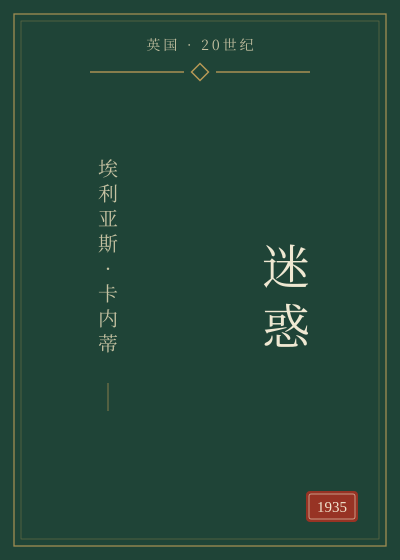
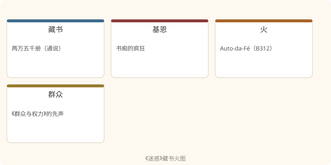

迷惑
一、基本信息
| 作者 | 埃利亚斯·卡内蒂 |
|---|---|
| 成书/出版 | 1935年（Britannica：Die Blendung (1935; Auto-da-Fé, or The Tower of Babel)） Isaac Bashevis Singer — Encyclopaedia Britannica 与 Elias Canetti — Encyclopaedia Britannica（百科全书） |
| 国别/地区 | 英国 |
| 时代 | 现当代 · 20世纪 |
| 体裁 | 长篇小说 |
| 语言 | 德语 |

《迷惑》藏书火图（主题·结构图）
二、创作背景
Britannica（B312）：'A planned eight-novel saga of the disorder he saw around him was reduced to Die Blendung (1935; Auto-da-Fé, or The Tower of Babel)'——原计划八部曲缩为一部。
作者（B312）：1981诺奖；'His major work, Masse und Macht (1960; Crowds and Power)'；'crowds, the psychopathology of power'（B312 语境）。
三、内容脉络
汉学家彼得·基恩的藏书与房间——被女仆与'弟弟'逐出家门（通说待核）。
藏书之火（通说待核）。
四、主要人物表
| 人物 | 身份 | 说明 |
|---|---|---|
| 彼得·基恩 | 汉学家 | （通说待核） |
| 泰蕾兹 | 女仆 | （通说待核） |
五、主题与艺术特点
- 藏书人自焚的寓言（通说待核）。
- 群众与权力的先声（B312：Masse und Macht 语境）。
- 知识分子的脆弱（通说待核）。
六、影响与评论
- Britannica：'A planned eight-novel saga……was reduced to Die Blendung (1935)'（B312）。
Isaac Bashevis Singer — Encyclopaedia Britannica 与 Elias Canetti — Encyclopaedia Britannica（百科全书） - 作者页：卡内蒂1981年诺奖（B312 作者级定位）。
Isaac Bashevis Singer — Encyclopaedia Britannica 与 Elias Canetti — Encyclopaedia Britannica（百科全书）
七、阅读建议
难点
- 巴洛式狂想文体。
- 书痴心理。
- 《迷惑》（中译本信息待核）。
- 德文原版（Herbert Reichner）。
先《迷惑》后《群众与权力》。
八、待核实
- 1935/1936出版核对。
- 彼得·基恩/泰蕾兹人名核对。
- 书名 Auto-da-Fé（火刑）的题解待核。
本页主要来源
埃利亚斯·卡内蒂的其他收录作品：迷惑